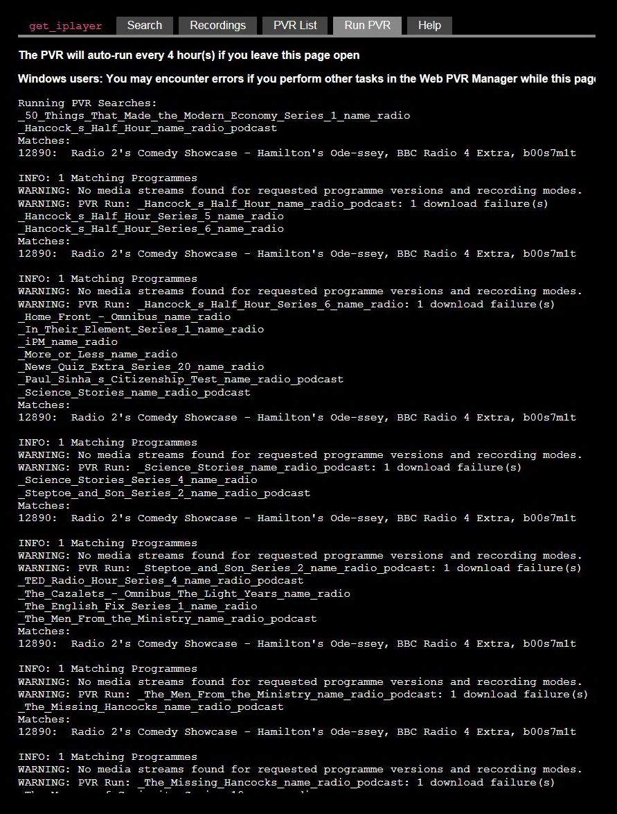

(I've read the FAQ, the Rules & Release Notes, and didn't find any
answer in the bits of them that I understood, sorry...
System specs / settings at end.
A variant of the problem existed late-on in v2.9x too, details at foot of
page if you want them.)
------------
The problem is that the WEB_PVR is attempting to download programme(s)
that I've not asked it for.
Now with V3.x It's determined to download "Radio 2's Comedy Showcase -
Hamilton's Ode-ssey, BBC Radio 4 Extra, b00s7m1t"
It never succeeds.
I emphatically have not asked for it.
I have tried the "exclude programme" function in WEB_PVR and the
get_iplayer --pvr-disable=Hamilton's_Ode-ssey command in the CLi,
(but this doesn't show under "get_iplayer --prefs-show", should it?)
Neither has any effect on the problem. (I tried it with and without
the apostrophe.)
I've also tried downloading the programme manually to see if having
it in the download history would make any difference, it didn't.
-------------
May be relevant..? I only mention it here as it "seems" to have got
worse since it's been trying to download "Hamilton's Ode-ssey".
It seems to be taking days to find new editions of programmes in the
schedule, so I'm getting nervous about missing episodes of radio
series. Is there an upper limit to how long I should wait before
considering a programmed "lost" to web_pvr's cache?
There are warnings about problems with the PVR cache not updating
reliably in the notes for v3.01, to do with web scraping I think, but
it was mostly beyond my understanding.
Those episodes that WEB_PVR doesn't find are happily downloading via
the recursive command in the CLi.
--------------------
Settings & Specs:
I've attached a log file generated by running the PVR from within the CLi.
I'm using fully updated W7 Pro 64bit, i7 cpu with 32GB of RAM.
WEB_PVR is running in IE11, v11.0.42
Output is to an internal SSD.
It's v3.01 of GiP, but the problem was present on v3.0 too, and is
the reason why I upgraded to v3.01, (which was installed over the top
of v3.0 without uninstalling, as v3.0 was over v2.9x).
I have GiP set to load only the Radio listings for R4, R4E & R6music,
named as per the list buried in the online help, and have never tried
to download, search or stream any TV stuff.
---------------------
A similar problem was there for me in the last couple of months of v2.9x,
wherein it spontaneously started downloading "Don Letts Culture Clash Radio"
& "the Radio 4 Appeal" every week, and "Recycled Radio" when it was on. It
persisted with this 'till v3.0 arrived
It was no real effort to delete them so I didn't pursue the problem. I always
assumed that it was to do with having "Radio" in the title in some obscure way?
That was the only thing the random downloads had in common that I could see...
Sorry 'bout that, definitely did it but must have missed a step.
should be here now.
Have also attached a screengrab of the web_pvr running, just in case it helps...
failing_pvr_log.txt

You should have noticed from the search arguments in the log that you've messed up a number of your PVR searches. Example:
Code:
INFO: Search args: '^Hancock's Half Hour$','(Documents\Radio|Stuff\Downloaded|Radio)'
You already know why that finds unwanted programmes.
EDIT: Next time, save yourself some trouble and check your PVR searches with
--pvr-list first.
Thanks for that.
It's very odd, though as I've never edited them, beyond manually removing "podcast" from the "pvrsearch" value from some entries when v3.0 objected to them at first use.
All the entries in the list have been generated by the web-pvr "search / add series" command, not by manual entry through the CLi.
They've never been exported / imported / restored, so from here it looks as if those errors have occurred spontaneously with the installation of v3.0. Is that possible? (Although it was misbehaving in v2.9x, so maybe not...)
I'll go away now and edit them...
thanks again. Hope I won't be back later!
(PS, would I understand if you tried to explain why it had seized on that particular programme, of all the ones available?)
Get_iPlayer is a lifeline to me as I work on my own full time, and a ready supply of R4 / R4E stuff is all that stands between me and total loss of sanity, so all your work on it over the years really is much appreciated.
Thanks again, ed.
Turns out that I'm even more stupid than you thought, sorry.
I went to edit the entries and realised immediately that I can't see what's up with the search string example you posted after all...
When I posted my response to it I was looking at the spacers GiP had inserted into the output path, and the "$" appended onto the programme name. I compared the Hancock entry with one that web_pvr generated for a series record that I set up just now, and they look much the same to me.
Some of the entries have the output path displayed as "search1", some as "search0" and some not at all, is that it?
Is there a primer page you can point me to that will teach me to pick the relevant bones out of the log file?
I assume that the $ symbol allows for a variable, in this case presumably an episode name or number?
My limited (= some BBC Basic in the 80s) coding knowledge means that either I'm looking in the wrong place, or not recognising the fault when it's in front of me. Remember that all those entries were generated by the web_pvr's "add series" function, not by me.
ed.
Remove the lines with bogus search arg from all your pvr search files. Don't try to fix them in the Web PVR. Edit the files containing the broken pvr searches directly in a text editor. Ensure that each file is left with one entry keyed as "search0" that has the correct search term as its value.
The "$" doesn't designate a variable. It designates a regular expression. Google if you're curious.
Had a look at the Wiki entry for regex, and the one that you link to somewhere in the depths of the instructions. Hmm. I can see the concept in a foggy way, but I think the execution is beyond me. My background is all with mechanical systems, if I can't see it move I struggle to understand it. That's probably why I work on my own...
Had a stiff drink and fiddled with the PVR folder's contents as you directed, and the "pvr list" page in web pvr is much tidier now, it used to require scrolling to get to the bottom, but now occupies half a page. I'm sure I didn't delete that much, though one programme had managed to accrue four layers of searches...
I'd already downloaded most of my outstanding stuff manually so it only had one programme to fetch when I tried it just now, but it did it quickly and with no error messages.
Wonder if that would have fixed the similar problem I was having with v2.9x?
Thanks very much for your patience and indulgence this evening, and for getting v3.0 out so quickly after they broke 2.9, I assume that that was a team effort as it smelled of a complete rewrite from out here in simple end-user land?
ed.
First of all you can specify globally where you save your files, e.g. for windows:
Code:
get_iplayer --prefs-add --output "c:\my\download\directory"
Here are a couple of radio search examples, as seen in a text editor. I also don't understand regex to any great extent, however strings with a "$" are matched exactly, whereas strings without are matched as "beginning with"
so:
Code:
fields name
subtitles 0
thumb 0
type radio
search0 ^Rob Newman's Neuropolis: Series 1$
Will only work for series 1
Whilst:
Code:
fields name
subtitles 0
thumb 0
type radio
search0 ^Just a Minute
Will work for any series of "Just a Minute" (as it doesn't have the "$" so will work with any string whose first bit matches the search term)
What I would suggest is that you set your output directory, then move all your searches to a backup directory, then recreate the searches with the web front end.
Once they are recreated you can have a look at them with a text editor and that might help you understand a bit better on what to look for when they go wrong.
In a minor expansion to roga's answer
^ means must start at the beginning
$ means finish at the end
So "Just a Minute" will match and program containing the text "Just a Minute"
Matching Example - When Just a Minute First Started
"^Just a Minute" will not match the example above
Matching Example - Just a Minute: Series 99
"^Just a Minute$ will not match either of the examples above
Ok, that clarifies it, thanks!
I nobbled the PVR list found within my ".Get_iPlayer" folder using notepad, and all is well, though now I have a clearer understanding of how it works, and as that it's still working a few hours later, I'll tweak some of the entries as I would like them to be enduring, rather than by series.
Simply searching for "Hancock" might be a problem, though. I'm sure Nick Hancock is a lovely chap, but I've no interest in football whatsoever, so that'll probably require two searches, "Hancock's Half Hour" and "missing Hancocks". Does it care about apostrophes? A moderate learning curve awaits, I suspect...
I'd still love to know how and why the searches became corrupted though.
Quote:Simply searching for "Hancock" might be a problem
If you have
Then it will only match string which begin with "Hancock". If you miss out the "^" then it will match any string with "Hancock" in it, e.g. Nick Hancock.
Quote:Does it care about apostrophes?
Some punctuation is problematic, and you have to use escape characters e.g:
Code:
fields name
subtitles 0
thumb 0
type radio
search0 ^The Invention of\.\.\.: The USA$
However I think apostrophes are OK as I also have:
Code:
fields name
subtitles 0
thumb 0
type radio
search0 ^Boswell's Lives
However as I am not that conversant with regex, I usually use the web front end to deal with any entries that might be problematic.
BTW i have set many items as global defaults so my search expressions are quite simple. To further decrease poor matches you could set your defaults to particular radio channels. See e.g. from
https://github.com/get-iplayer/get_iplay...umentation:
Quote:Index only Radio 4 and Radio 4 Extra (assumes --type in preferences includes "radio"). The string "Radio 4" will match both channels:
Code:
get_iplayer --prefs-add --refresh-include="Radio 4"
Index only Radio 4 (assumes --type in preferences includes "radio"). The regular expression "Radio 4$" will match only Radio 4:
Code:
get_iplayer --prefs-add --refresh-include="Radio 4$"
The series called "The Missing Hancocks" would be a problem with "^Hancock"? It doesn't matter as having two carefully chosen searches is hardly a problem, just trying to get a better understanding of what's going on behind the scenes if I set a series record with the web front end, and a better understanding too of why unexpected things sometimes happen.
I am already set to ignore everything except R4, R4E & R6, which helps a great deal, wish I'd set it years ago, but it is a trait of mine only to get to grips with the controls after something has gone wrong.
I'll look into the escape characters problem as I've not even spotted them in any of the instructions thus far. From memory the example title you give does contain a colon, so presumably that is the punctuation that the escape characters are helping to sidestep?
(18-05-2017, 01:09 AM)I'll look into the escape characters problem as I've not even spotted them in any of the instructions thus far. From memory the example title you give does contain a colon, so presumably that is the punctuation that the escape characters are helping to sidestep?
I think it is the full stop, but I have also noticed it with other characters, as I said I am not an expert in regex, so I don't really know which characters you have to be careful with.
What I often do is create a new serach by copying and editing a previous one, If it doesn't work as expected then I'll use the web front end.
So my limited understanding is from an experimental approach rather than an understanding of the principles involved, however I have just googled and found the following at:
http://www.regular-expressions.info/quickstart.html
Quote:Twelve characters have special meanings in regular expressions: the backslash \, the caret ^, the dollar sign $, the period or dot ., the vertical bar or pipe symbol |, the question mark ?, the asterisk or star *, the plus sign +, the opening parenthesis (, the closing parenthesis ), the opening square bracket [, and the opening curly brace {. These special characters are often called "metacharacters". Most of them are errors when used alone.
If you want to use any of these characters as a literal in a regex, you need to escape them with a backslash. If you want to match 1+1=2, the correct regex is 1\+1=2. Otherwise, the plus sign has a special meaning.
{kind=link}